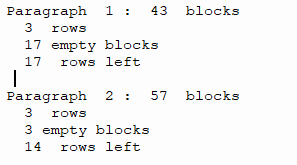

My hobbies
My hobbies are often strong but short-lived. As a result, I have so many hobbies ranging from watches, plastic models, archery, coding,... Out of which only programming and my undying passion with computers turn out to be useful. I started learning about Python by myself in 7th grade. I stayed in my room everyday, finishing assignments after assignments on CodeAcademy. By the end of the summer, I have already completed the course and I could write simple programs to solve some of my maths homeworks.
Kanji Counter
 When I first got a scholarship, the organization required me to hand-write them many reports in Japanese on a 20x20 grid report form. I always had to start over many times due to words misaglinment leading to space problems. To solve this problem, I wrote a small Python program that counts the number of kanji and apply writing rules then returns the number of blank spaces left in each paragraphs so I can plan my essays better.
Busdoko
 This is a small web scrapper to get data from the APU Bus Doko website and display it on an LCD display via a Raspberry Pi. The project use Python to drive Selenium to run an automated version of Chrome browser and push the data onto a simple LCD display. The LCD is controlled by the Raspberry Pi and a simple button.
This is a small web scrapper to get data from the APU Bus Doko website and display it on an LCD display via a Raspberry Pi. The project use Python to drive Selenium to run an automated version of Chrome browser and push the data onto a simple LCD display. The LCD is controlled by the Raspberry Pi and a simple button.